À la fin il ne nous reste rien
Effondrement du NEPK, fuite biotechnologique, et la fonction d'apprentissage que nous n'avons jamais eue
Jacobus van Merksteijn
- Auteur — Jacobus van Merksteijn
- Date — 20 juillet 2026 · Palma de Majorque
- Rubrique — Troisième de la série · Nova Democratia · Édition 2 · Suite de « L'honnêteté rend la gouvernance possible » et « Décider sans visibilité »
- Base — Recalcul du NEPK juillet 2026 · Cluster biotechnologique de Leiden · loi sur les déchets plastiques · Eli Lilly Katwijk · convergence base zéro 1/5 · équipes à haute expertise
- Sources — Het Financieele Dagblad, OECD Trade in Value Added, valeur ajoutée industrielle Banque mondiale, OECD Revenue Statistics, CBS 85821NED, Comptes nationaux CBS, États provinciaux de Hollande-Méridionale, CE Delft, EU Carbon Removals Certification Framework
Le jeudi 9 juillet 2026, le bâtiment de Batavia Biosciences à Leiden a été évacué pour odeur de brûlé — un moteur de la climatisation. Onze jours plus tard, Het Financieele Dagblad publiait l'analyse qui met à nu le schéma : Batavia, à Leiden depuis 2009 et racheté en 2021 pour 200 millions d'euros par la sud-coréenne CJ CheilJedang, cesse ses activités dans le monde entier. Les 150 employés, tous en surnombre. Le nouveau bâtiment de 12 000 mètres carrés, ayant coûté plus de 100 millions d'euros, est vide. Devant la porte, un hôtel à abeilles. À l'intérieur : le silence.
Ce n'est pas un accident. C'est le schéma. Galapagos, qui a valu jusqu'à 15 milliards d'euros en bourse, s'est effondré et s'est retiré en Belgique sous un autre nom. Halix, le fabricant de vaccins d'AstraZeneca pour lequel Boris Johnson a envisagé une intervention militaire, connaît aujourd'hui un calme total : parking désert, 10 millions de pertes, machines à l'arrêt. Pharming a supprimé 20% de ses postes. ProQR sous pression. 5 des 6 grandes entreprises biotechnologiques néerlandaises en mode de vente ou de vidage — et pendant ce temps les Américains continuent de construire : Bristol Myers Squibb, Johnson & Johnson, et Eli Lilly avec une usine de 3 milliards d'euros à Katwijk.
Ceci est le troisième article d'une série de trois. D'abord l'aveu. Puis la vision. Maintenant la fonction d'apprentissage que nous n'avons jamais eue — et la preuve que sans elle, le crash n'arrive pas en années, mais a déjà commencé.
Préface — Troisième de la série : l'horloge tourne
Trois articles, une architecture. Dans L'honnêteté rend la gouvernance possible est venu l'aveu : la formule PBW a montré que 419 Md€ du PIB néerlandais ne sont pas productifs, dissimulés par des fictions comptables. Dans Décider sans visibilité est venue la vision : des lois des années soixante et quatre-vingt-dix rigidifient le système sans date d'expiration. Ce troisième article ajoute la fonction d'apprentissage — le mécanisme qui fait vraiment fonctionner les deux premiers fondements.
Et l'horloge tourne plus vite que les deux premiers articles ne pouvaient le montrer. Alors que la projection openvizier du début de 2026 prédisait un effondrement du NEPK sous le seuil de 3% entre 2029 et 2033, le recalcul de juillet 2026 sur sources primaires montre un NEPK de 2,95% — déjà sous ce seuil. 5 des 6 grandes entreprises biotechnologiques néerlandaises sont en mode de vente. La date du crash n'est pas 2032. C'est 2027-2028.
Partie 0 — Du PIB au NEPK : pourquoi le PIB ne nous dit plus rien
Le PIB des Pays-Bas continue d'augmenter. Officiellement, tout va bien. Mais le PIB ne mesure pas ce que les Pays-Bas gagnent structurellement. Il mesure les dépenses totales, sans distinguer si le profit reste ici ou s'écoule vers Indianapolis, Séoul ou San Francisco. La mesure qui mesure vraiment cela — le NEPK, le Noyau Productif Externe Net — était début 2026 à 4,2% du PIB selon openvizier.org. C'était déjà le plus bas des sept pays hautement développés étudiés. Singapour est à 17%. L'Irlande à 11,9%. L'Allemagne à 7,8%.
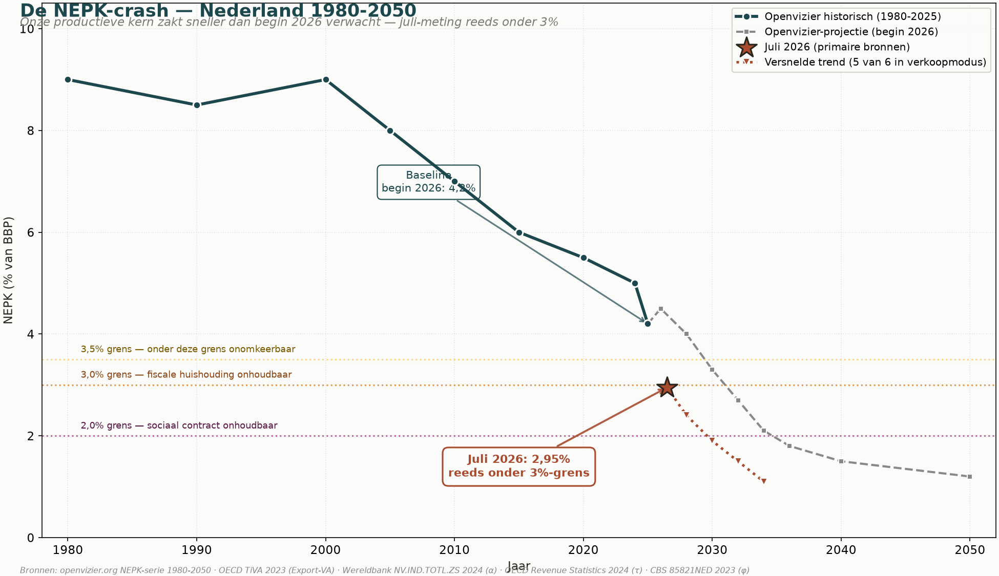
Six mois plus tard, les Pays-Bas sont déjà tombés plus bas. Le recalcul sur les sources primaires les plus récentes — OECD Trade in Value Added 2023 (VA-export 36,1%), valeur ajoutée industrielle Banque mondiale 2024 (α issu de 17,86% du PIB), OECD Revenue Statistics 2024 (τ = 38,5%) et CBS 85821NED 2023 (contrôle étranger 25,6% de la VA des entreprises, φ = 0,744) — donne pour juillet 2026 un NEPK de 2,95%. Ce n'est pas incohérent avec la projection antérieure. C'est exactement ce qu'openvizier prédisait, mais avec une accélération de cinq à sept ans. Les Pays-Bas sont déjà sous le seuil de 3% dont on prévenait qu'au-dessous, les finances publiques deviennent insoutenables.
Ce que les chiffres ne montrent pas encore — 5 sur 6 en mode de vente
Pourquoi le crash va-t-il plus vite que projeté ? Parce que le CBS, l'OCDE et la Banque mondiale rapportent avec un retard de douze à vingt-quatre mois. Les chiffres officiels de 2023 et 2024 capturent des transactions de 2022 et 2023. Ce qui bouge aujourd'hui dans l'économie n'apparaît dans aucune statistique. Et ce qui bouge, c'est ceci : cinq entrepreneurs sur six ayant construit quelque chose de significatif n'investissent plus. Ils arrangent les chiffres pour la vente. C'est doublement destructeur pour le NEPK : d'abord α baisse, car aucun nouvel investissement n'est fait ; ensuite φ baisse dès que l'accord est conclu, car les acheteurs sont américains, coréens, allemands, belges.
Les deux mouvements restent invisibles pour la statistique : l'arrêt d'investissement n'est rapporté nulle part, et la vente n'apparaît que lorsque le CBS ou la Bundesbank enregistre le changement de propriété — des mois ou des années plus tard. Le temps que les chiffres capturent la réalité, les Pays-Bas seront plus bas que ce que le calcul de juillet indique déjà. C'est précisément pourquoi « attendre les chiffres » est une erreur politique : une fois les chiffres prêts, la situation est irréversible.
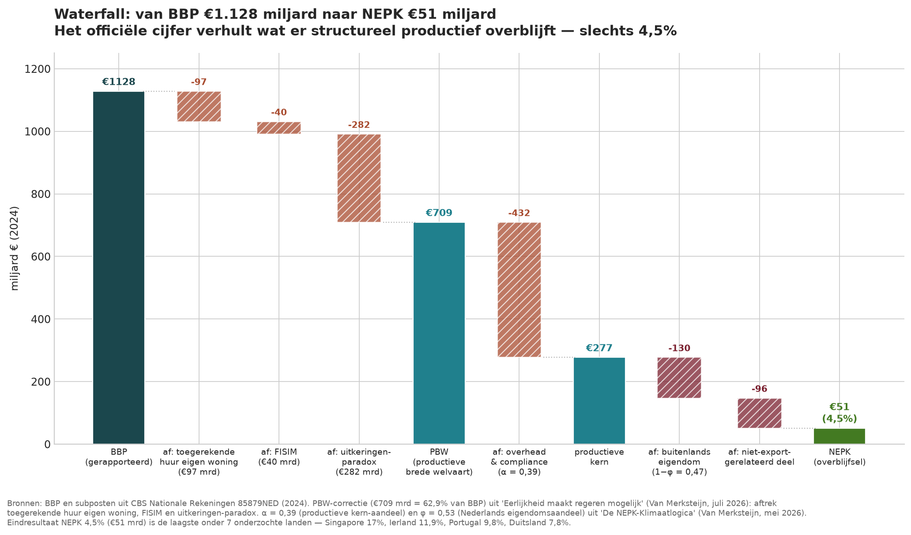
Pour comprendre le crash, il faut décomposer le chiffre. Le PIB néerlandais de 2024 est de 1 128 Md€. Il contient trois postes qui ne mesurent pas la production : 97 Md€ de loyer imputé (une fiction comptable où les propriétaires se paient un loyer à eux-mêmes), 40 Md€ de FISIM (services bancaires fictifs ajoutés statistiquement au PIB), et 282 Md€ du paradoxe des prestations (dépenses publiques sans contrepartie productive). En soustrayant ces trois postes, il reste 709 Md€ de bien-être réel lié à la production — le PBW, 62,9% du PIB officiel.
De ce PBW il faut ensuite déduire les frais généraux et la charge de conformité : α = 0,39 pour les Pays-Bas, contre 0,58 pour Singapour. Ce qui reste est le noyau productif : 277 Md€. De cela, 47% est en propriété étrangère (φ = 0,53) — des profits qui s'écoulent vers des actionnaires étrangers. Ce qui reste est 51 Md€. Quatre virgule cinq pour cent. C'est le Noyau Productif Externe Net des Pays-Bas : ce que le pays gagne structurellement du monde, après déduction de la dissimulation comptable, des frais généraux bureaucratiques et de la rapatriation des profits. Ce n'est pas une lecture pessimiste de chiffres favorables. C'est la mathématique d'openvizier.org, basée sur l'OECD Trade in Value Added, la valeur ajoutée industrielle de la Banque mondiale et les Comptes nationaux du CBS.
Partie I — Les quatre leviers du NEPK
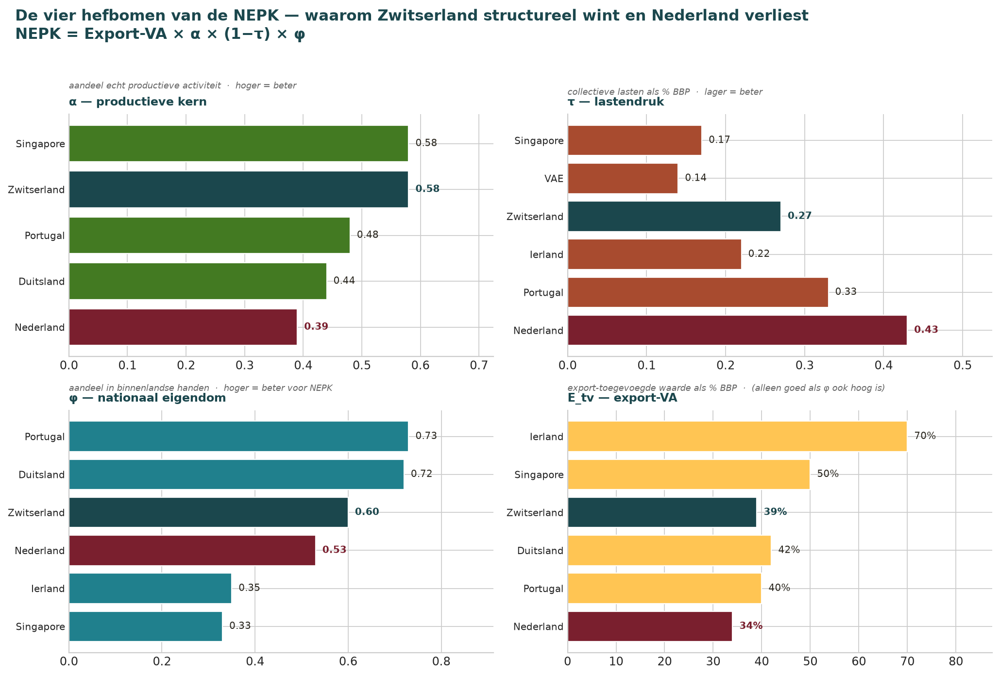
La formule du NEPK est impitoyablement simple :
NEPK = VA_exp × α × (1 − τ) × φ
Quatre leviers. VA_exp est la valeur ajoutée d'exportation en pourcentage du PIB. α (alpha) est le noyau productif — la part de l'économie qui, après déduction des frais généraux et de la conformité, ajoute réellement de la valeur. τ (tau) est la pression fiscale collective. φ (phi) est la part de propriété néerlandaise. Sur les quatre leviers, les Pays-Bas perdent.
α — le noyau productif qui se réduit
Notre α est de 0,39. Sur chaque euro de valeur ajoutée, 39 centimes sont réellement productifs ; le reste disparaît en frais généraux, conformité, consultants et services intermédiaires. Singapour : 0,58. Portugal : 0,48. La perte est littéralement dans la citation du FD du PDG Geert Jan Groeneveld : le professeur du LUMC avec « d'excellentes idées » qui ne s'y risque pas parce qu'il ne recevrait que 5% des actions. Sa contribution potentielle — nouveaux médicaments, entreprises exportatrices, emploi hautement qualifié — disparaît dans α. Jamais mesurée, mais bien perdue.
τ — la pression fiscale qui érode
Notre τ est de 0,43. Presque la moitié de chaque euro gagné productivement va aux charges collectives. Singapour : 0,17. EAU : 0,14. Irlande : 0,19. Portugal : 0,33 — et le Portugal a aussi un État-providence. La différence est que les Pays-Bas laissent croître les charges collectives sans contrepartie en capacité productive. Chaque euro qui va vers τ et non vers α accélère le crash.
φ — la propriété qui s'échappe
Notre φ est de 0,53 — 47% de la capacité productive néerlandaise est en mains étrangères. Au Portugal : 27%. En Allemagne : 28%. Singapour a φ 0,33 — encore plus bas que chez nous — mais l'utilise pour maintenir la pression fiscale basse, sans contrat social devant être financé par le profit national. Les Pays-Bas ont bien ce contrat, et perdent en même temps la propriété pour le financer.
Chaque fois qu'une entreprise biotechnologique néerlandaise est vendue à un propriétaire étranger, φ baisse. Batavia en 2021 vers la Corée. Galapagos en 2024 retour en Belgique. Argenx il y a des années en Belgique. Et chaque usine américaine sur le sol néerlandais — Bristol Myers Squibb, Johnson & Johnson, Eli Lilly — augmente VA_exp et α, mais pas φ. Statistiquement l'économie semble croître. Le NEPK s'effondre.
VA_exp — l'exportation qui peut tromper
Notre VA_exp est d'environ 38%. Irlande : 55%. Singapour : 50%. Cela semble favorable, mais Singapour a φ 0,33 — une grande partie de cette exportation rapporte peu à Singapour lui-même. Une exportation élevée n'est productivement sensée que si on la garde en mains propres. L'Irlande combine VA_exp élevée avec τ basse et φ basse, et garde une partie du profit à l'intérieur du pays via une conception fiscale intelligente — NEPK net 11,9%. Les Pays-Bas ne font rien de tout cela.
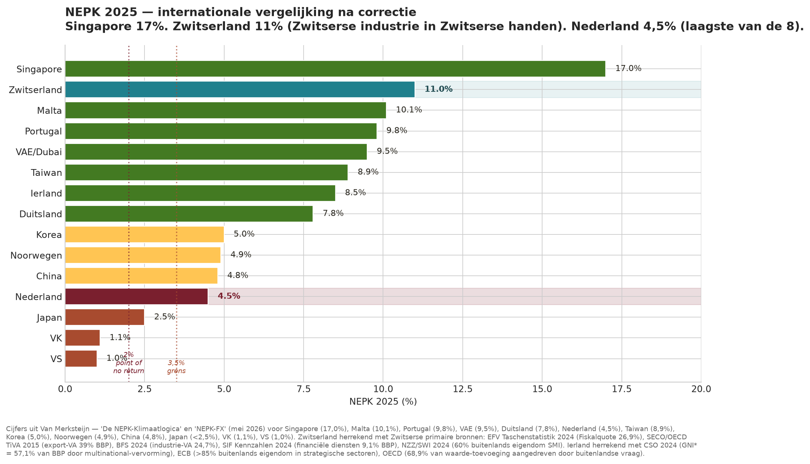
Où se situent les Pays-Bas — le classement
| Pays | NEPK | α | τ | φ | VA_exp |
|---|---|---|---|---|---|
| Pays-Bas | 4,5% | 0,39 | 0,43 | 0,53 | 38% |
| Allemagne | 7,8% | 0,46 | 0,40 | 0,72 | 39% |
| Suède | 9,1% | 0,49 | 0,42 | 0,71 | 43% |
| Suisse | 13,4% | 0,54 | 0,27 | 0,74 | 58% |
| Singapour | 17,0% | 0,58 | 0,17 | 0,33 | 50%* |
*La VA_exp de Singapour est faussée par le commerce de transit (179% de VA d'exportation brute) ; le NEPK de 17% résulte d'un calcul corrigé.
Les Pays-Bas sont sous le seuil de 3,5% dont openvizier.org prévient que nous devons rester au-dessus avant 2029, sinon l'implosion devient irréversible. Sans changement de politique, le NEPK tombe entre 2029 et 2033 sous le seuil critique de 3%. Avec la révolution de l'IA en plus — qui automatisera largement les services à forte intensité de connaissances où les Pays-Bas sont relativement forts — nous descendons à 2% avant 2035. À ce niveau, le pays ne peut plus financer son propre contrat social.
Ce n'est pas un accident. C'est le schéma.
Partie II — Trois cas de destruction du NEPK
Des chiffres abstraits appellent des cas concrets. Trois dossiers où les quatre leviers s'effondrent simultanément et où les Pays-Bas s'enlèvent le noyau sans s'en apercevoir. Chaque cas montre le même schéma : une décision politique sans la connaissance et la compétence nécessaires, avec une perte de NEPK qui n'est structurellement plus récupérée.
Cas 1 — Biotech de Leiden : le cluster qui s'en va
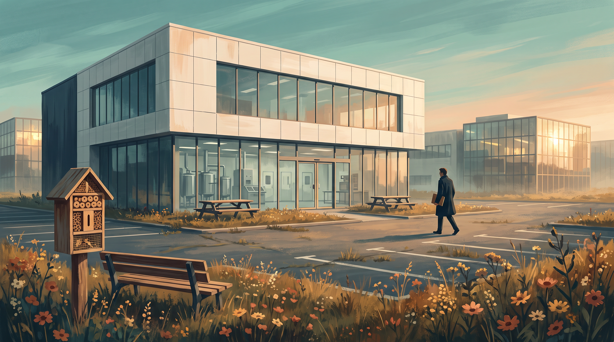
L'article du FD du 20 juillet 2026 dresse le tableau que chaque chiffre du NEPK confirme. Leiden Bio Science Park était le plus grand cluster des sciences de la vie des Pays-Bas, top 5 en Europe. Aujourd'hui, c'est un cluster en fuite.
| Entreprise | Quoi | Vers où | Effet sur φ |
|---|---|---|---|
| Galapagos | A valu jusqu'à 15 Md€ en bourse ; s'est effondré | Belgique (autre nom) | φ en baisse — capital et brevets partis |
| Batavia Biosciences | Rachat de 200 M€ en 2021 ; ferme mondialement ; 150 en surnombre | Corée du Sud → zéro | φ en double baisse — vendu, puis liquidé |
| Halix | Fabricant de vaccins AstraZeneca ; 10 M€ de pertes ; arrêt | Reconversion envisagée | φ à risque — capacité inutilisée |
| Pharming | 20% des postes supprimés au siège | Cours boursier sous pression | φ en réduction — activité principale vidée |
| ProQR | Sous pression ; cours faible | Rachat possible | φ à risque |
| Argenx (historique) | D'origine néerlandaise ; vaut maintenant 30+ Md€ | Gand (BE) — il y a des années | φ perdu — le plus grand qu'il y ait eu |
Pendant ce temps, on construit bien — mais pas de propriétaires néerlandais. Bristol Myers Squibb a construit un bâtiment neuf pour thérapies cellulaires contre le cancer. Johnson & Johnson a investi dans un nouveau bloc à façades en pierre blanche. Eli Lilly construit à Katwijk pour 3 Md€. Chaque investissement augmente VA_exp et α sur le sol néerlandais. Chaque investissement a φ = 0, car le profit va à Indianapolis et New York.
Pourquoi cela arrive : la règle des 5% et le manque de capital de croissance
Deux raisons ressortent. D'abord : la règle des actions à 5% (règle des 5%). Un professeur du LUMC voulant commercialiser sa propre découverte peut, sous le Règlement néerlandais d'exploitation des connaissances, généralement posséder au maximum 5-10% des actions. Le brevet est enregistré au nom de l'institution académique ; l'université place ses actions dans sa Holding BV ; les investisseurs reçoivent des actions en échange de capital ; le chercheur garde le reste. Sous ces conditions, il « s'y risque pas », selon les mots de Groeneveld. En Belgique — où Argenx s'est installé et où elle vaut maintenant plus de 30 Md€ — le scientifique-entrepreneur garde davantage. Au Danemark (Novo Nordisk, Genmab). En Allemagne (BioNTech). Partout mieux qu'ici.
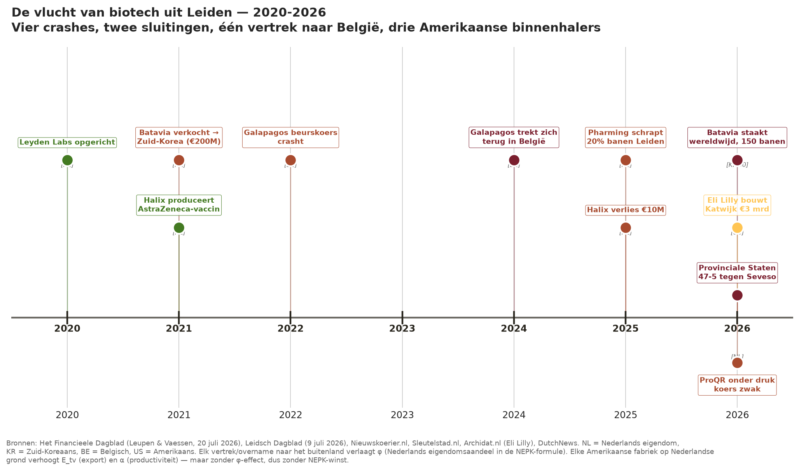
Deuxièmement : le manque de capital de croissance néerlandais. Leyden Labs, l'une des rares entreprises biotechnologiques de Leiden réellement florissantes, a levé en juin 2026 40 M€ — mais avec du capital de la Fondation Gates, la singapourienne ClavystBio, l'EIC et l'américaine Fidelity. Invest-NL a participé pour 10 M€. Le reste est étranger. Quand Leyden Labs réussira, le produit ira aux principaux actionnaires — retour à l'étranger. φ en baisse, même en cas de succès.
La solution cachée — ce que Batavia aurait pu devenir
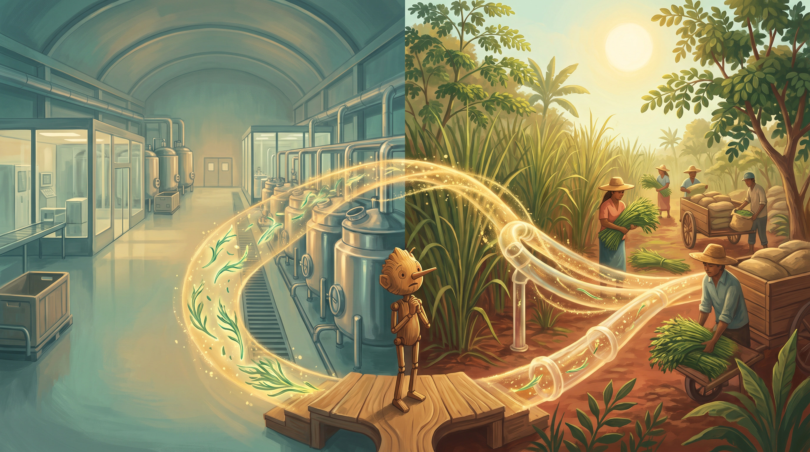
Batavia voulait produire des vaccins et des médicaments biologiques comme contrepoids européen à la Chine. Quand cela n'a pas réussi commercialement sur le marché de masse des vaccins, l'entreprise a été déclarée en surnombre. Mais l'infrastructure — 12 000 m² de salle blanche, bioréacteurs, salles propres, licences GMP, personnel techniquement formé — n'a pas disparu. Elle reste vide, attendant un usage que personne n'a nommé parce que personne ne voit le lien.
Dans le dossier des corridors de la Ceinture-Mondiale — traité dans Décider sans visibilité — il est détaillé comment des corridors tropicaux avec de l'herbe Juncao et l'arbre Moringa peuvent produire des millions de tonnes de biomasse par an. Via la technologie d'hydrolysat à membrane multiple, cette biomasse est convertie en éléments constitutifs transformables : protéines, glucides, dérivés de cellulose, stéroïdes végétaux. Cette technologie s'adapte exactement à l'infrastructure de bioréacteurs que Batavia a construite. Les procédés de séparation en bioréacteur pour vaccins viraux sont techniquement et juridiquement de la même catégorie que les procédés de séparation par membrane pour hydrolysats végétaux. Les salles blanches GMP fonctionnent pour les deux. Le personnel qui savait fabriquer des vaccins peut fabriquer des hydrolysats.
C'est la question de base zéro en action : si nous recommencions aujourd'hui avec Batavia, avec toute la connaissance actuelle — qu'aurait-elle dû devenir ? Pas une filiale asiatique qui perd sur le marché de masse des vaccins, mais un nœud ancré néerlandais dans la chaîne d'hydrolysat de la Ceinture-Mondiale. Matière première du corridor mauritanien GMV ou du corridor Andes-Amazonie. Transformation à Leiden. Distribution en aval vers la pharma et l'alimentaire européens. Propriété néerlandaise (φ en hausse). Marge élevée (α en hausse). Exportation (VA_exp en hausse). Faible pression fiscale si conçue intelligemment sur le plan fiscal (τ limitée). Les quatre leviers du NEPK dans la bonne direction.
Mais personne n'a construit ce pont. Pas à la Chambre des représentants, où la commission Agriculture et la commission Affaires économiques ne se parlent pas. Pas aux États provinciaux. Pas chez Invest-NL. Pas au ministère des Affaires économiques. Si, sur openvizier.org, où les dossiers sont côte à côte — mais c'est un journal d'une seule personne depuis Palma.
C'est la scène de Pinocchio en miniature. Nous nous disons : « le marché est tout simplement mauvais » (titre littéral du journal du 9 juillet). Nous disons : « correction de marché après la pandémie » (HAL Allergy). Nous disons : « nous avons été rattrapés par la réalité » (Marty Stork, directrice RH de Batavia). Chaque fois le nez grandit. La réalité est que nous avions une solution que personne ne relie.
Cas 2 — La loi sur les déchets plastiques : une règle, un million de tonnes de CO₂
Les Pays-Bas ont depuis les années 90 une bonne loi : les déchets ne peuvent pas être mis en décharge. Excellente politique — elle empêche les décharges sauvages, protège le sol et les eaux souterraines. La question est : que considérons-nous comme déchet, et que ne considérons-nous plus comme tel ? Dans les années 90, les Pays-Bas ont opéré un changement crucial. La biomasse a été retirée du régime strict des déchets. Les déchets organiques ménagers ont obtenu une obligation de collecte propre depuis le 1er janvier 1994, sont passés sous le décret BOOM et sont depuis traités comme matière première pour le compost et le biogaz. Depuis, 1,5 million de tonnes de déchets organiques plus 1,5 million de tonnes de déchets verts par an vont vers un traitement à haute valeur au lieu de l'incinérateur — l'une des politiques circulaires les plus réussies des Pays-Bas.
Le plastique reste dans l'ancien régime. Il relève des « déchets ménagers résiduels » et des « déchets industriels résiduels » dans le décret d'interdiction de mise en décharge. La mise en décharge est interdite. Le recyclage est bien mais insuffisamment couvrant. Le reste doit être incinéré dans des installations AVI — cela produit 2,64-2,86 kg de CO₂ fossile par kg de plastique. Aux Pays-Bas, cela représente 1,32 mégatonne de CO₂ par an. Dans toute l'UE : 71,5 mégatonnes par an, soit 2,4% des émissions totales de l'UE — pour du carbone qui aurait pu être stocké en toute sécurité sous terre.
Le Carbon Removals Certification Framework (CRCF, 2024) de l'UE reconnaît l'élimination permanente du carbone comme objectif politique. Le stockage souterrain de plastique stable — dans d'anciennes mines de sel, dans la carrière de Hambach, dans des sites géologiques certifiés — est par définition une élimination permanente du carbone. Pourtant, ce n'est pas autorisé, car le plastique reste dans l'ancien régime des déchets.
Un seul changement de règle. Comme la biomasse a été déplacée en 1994 de « incinérée comme déchet résiduel » vers « compostage et biogaz », le plastique doit être déplacé de « incinéré comme déchet résiduel » vers « stockage souterrain certifié sous CRCF ». Inversion fiscale pour les Pays-Bas : de 334 M€ de contribution + 99 M€ de prélèvement ETS = 433 M€ d'inversion annuelle. À l'échelle de l'UE : 5,4 Md€/an. Effet NEPK : positif — nouvelle industrie de plastiques biosourcés (Bio-PE, Bio-PP, PEF) avec propriété néerlandaise (φ en hausse), marge élevée (α en hausse), exportation européenne (VA_exp en hausse).
Pourquoi cela n'arrive-t-il pas ? Parce qu'à la Chambre des représentants, aucun membre de commission n'a de connaissance spécialisée chimique, technique des membranes ou juridique en déchets. Il y a bien quelqu'un avec un parcours politique, un porte-parole Environnement, un chef de groupe. L'incompétence préserve le statu quo. Le nez grandit, le CO₂ continue de monter, le NEPK s'effondre.
Cas 3 — Eli Lilly Katwijk : l'incompétence qui rejette les investissements
Le 9 juillet 2026, les États provinciaux de Hollande-Méridionale ont voté 47 contre 5 en faveur de 31 M€ de mesures de circulation autour d'une nouvelle usine d'Eli Lilly à Katwijk, à condition que cette usine ne devienne pas une installation Seveso. La motion : « Nous chargeons les États délégués de tout mettre en œuvre pour empêcher qu'une telle entreprise ne s'installe ici. » Motif : inquiétudes sur les substances dangereuses, la pression de circulation, la pénurie d'eau potable, l'effet sur le réseau électrique et la construction de logements à Valkenhorst.
Toutes les inquiétudes sont réelles. La question est de savoir si le membre moyen des États dispose de la connaissance pour évaluer la classification Seveso. Une installation Seveso est un site de production chimique avec des quantités définies de substances dangereuses au-dessus d'un seuil de l'UE — cela dépend d'inventaires précis de substances, pas de « nous construisons une grande usine ». Le délégué Meindert Stolk a fait remarquer : « Sur l'ensemble du Leiden Bio Science Park, il n'y a aucune entreprise Seveso. Personne n'attend de situations dangereuses. » Les États ont néanmoins voté 47-5 contre.
C'est le diagnostic du FD sous forme politique. Un investissement de 3 Md€, 500 emplois hautement qualifiés, l'extension d'un parc scientifique de renommée internationale — dépend d'un vote politique dont la majorité des votants ne peut évaluer le contenu technique. Sinan Özkaya (PRO) : « Nous aurions dû, comme États, pouvoir trouver quelque chose sur les conséquences pour le réseau électrique, l'eau potable et l'environnement. » À juste titre. Mais qui, aux États, peut évaluer cela ? Et si personne ne le peut, pourquoi prenons-nous alors la décision ?
Et même si Eli Lilly vient : propriété américaine à 100%. Effet NEPK : α et VA_exp en hausse, φ inchangé. Les Pays-Bas fournissent terrain, eau, électricité, infrastructure de circulation (31 M€ pour Katwijk seul), et reçoivent en retour une production dont le profit part vers Indianapolis. Si l'usine finit par ne pas se construire en raison du désordre politique, nous perdons aussi la croissance d'α. Deux scénarios, tous deux inférieurs à la variante où une entreprise biotechnologique néerlandaise aurait fait le même investissement avec le même terrain et le même permis.
Partie III — Base zéro : la fonction d'apprentissage que nous n'avons pas
Trois cas, trois fois le même schéma : la connaissance pour résoudre le problème existe, mais la prise de décision politique ne l'incorpore pas. La réponse ne réside pas dans plus d'analyse, plus de commissions, plus de notes de politique. Elle réside dans un mécanisme structurel qui fait apprendre la législation. Ce mécanisme s'appelle base zéro avec convergence 1/5 (règle d'apprentissage) par an par dossier.
Tout ce qui apprend atteint son optimum en quelques années — sauf la législation néerlandaise
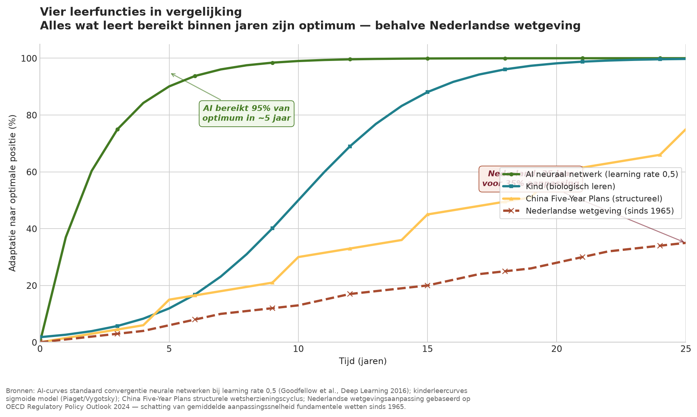
Tout ce qui apprend atteint son optimum en quelques années — sauf la législation néerlandaise.
Tous les systèmes qui produisent quelque chose de vraiment bon apprennent. Les réseaux neuronaux le font depuis 1986. Les enfants le font depuis la naissance. La Chine le fait via ses plans quinquennaux. Les artisans via la relation maître-apprenti. Les Pays-Bas et l'Europe ne le font pas — la loi fondamentale moyenne a un cycle de révision de 15 à 30 ans. Un ordre de grandeur plus lent que tout système d'apprentissage que nous connaissons.
La méthode : si nous recommencions aujourd'hui
La base zéro fonctionne ainsi. Chaque année, nous posons pour chaque loi ou dossier politique une seule question : « Si nous recommencions complètement aujourd'hui, avec toute la connaissance et la technologie actuelles, à quoi ressemblerait la loi ? » C'est fondamentalement différent de « comment ajustons-nous la loi existante ? ». Ajuster signifie empiler sur une base que l'on ne remet plus en question. La base zéro remet en question la base elle-même.
On compare ensuite cette base zéro imaginaire à la loi existante. Il y a un écart — parfois petit, parfois énorme. Dans la loi sur les déchets plastiques, l'écart est énorme (changer une règle résout 1,32 mégatonne de CO₂). Dans la règle des actions à 5%, l'écart est énorme (la Belgique le prouve). Dans la procédure de classification Seveso, l'écart est énorme (il manque un soutien technique pour les membres des États).
La règle du 1/5 — pourquoi exactement un cinquième
Et alors vient la règle du 1/5. Le gouvernement ne combler pas tout l'écart dans l'année à venir, mais exactement un cinquième. Pourquoi exactement un cinquième ? Parce que c'est la règle d'apprentissage qui apparaît partout où quelque chose apprend réellement.
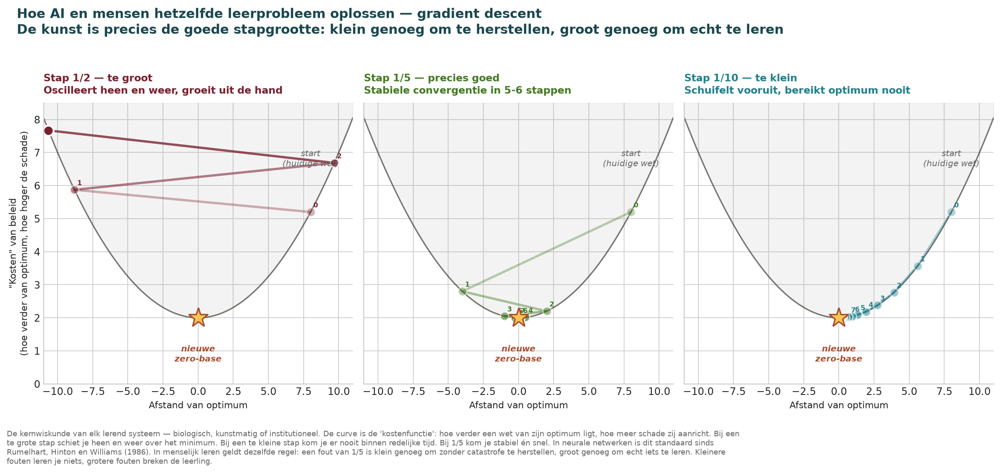
Dans les réseaux neuronaux, cela s'appelle la descente de gradient. Avec un pas trop grand, le système oscille et explose. Avec un pas trop petit, on n'atteint pas l'objectif dans un délai raisonnable. Le pas optimal se situe empiriquement entre 1/5 et 1/10 par itération. Adam, l'optimiseur d'IA le plus utilisé, utilise des taux d'apprentissage typiquement entre 0,1 et 0,2 — exactement entre 1/10 et 1/5.
La connaissance vient des erreurs commises et corrigées
La connaissance vient des erreurs commises et corrigées.
Le côté IA est le côté mathématique. Le côté humain est au moins aussi important. Chaque personne qui apprend quelque chose — un enfant qui apprend à marcher, un artisan qui apprend à construire — apprend par des erreurs de taille gérable. Précisément une erreur de 1/5 est la règle d'or : suffisamment petite pour se rétablir sans catastrophe, suffisamment grande pour vraiment apprendre quelque chose.
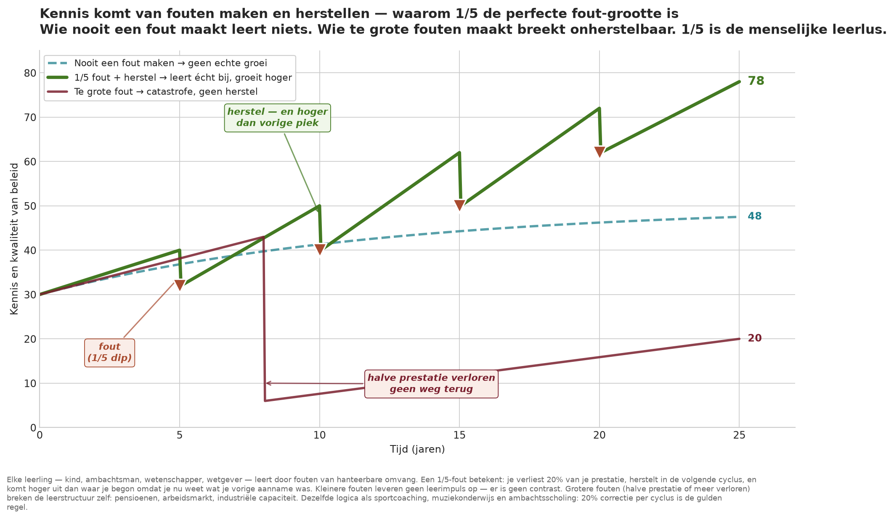
Pourquoi pas plus petit ? Parce qu'une erreur plus petite ne produit pas de contraste — on ne remarque pas ce qu'on a mal fait. Pourquoi pas plus grand ? Parce qu'une erreur plus grande brise l'apprenant lui-même. Si un système de pension perd la moitié de sa couverture lors d'une révision légale, les fonds de pension n'ont plus de marge pour se rétablir. La base zéro avec convergence 1/5 n'est donc pas un choix idéologique — c'est une règle d'apprentissage qui vient des mathématiques et des personnes elles-mêmes.
Chaque dossier son propre cycle annuel
Chaque dossier son propre cycle annuel.
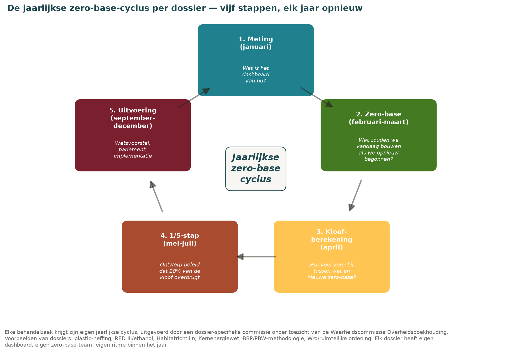
La base zéro ne fonctionne pas par pays dans son ensemble — cela redeviendrait une commission centraliste. Chaque dossier a son propre cycle annuel de base zéro, avec son propre tableau de bord, son propre calcul d'écart et son propre pas 1/5. Exactement comme chaque neurone dans un réseau a ses propres poids et suit son propre gradient.
Pour les trois cas de la Partie II, cela signifie concrètement :
- Cluster biotechnologique de Leiden — année 1 (2027) : la règle des actions à 5% pour les spin-offs académiques est révisée ; les chercheurs reçoivent 25% d'actions comme point de départ (1/5 du chemin vers la condition belge). Invest-NL obtient un mandat biotechnologique avec clause de propriété néerlandaise (verrouillage φ). L'usine de Batavia est désignée comme plateforme de conversion d'hydrolysat avec approvisionnement de la Ceinture-Mondiale.
- Loi sur les déchets plastiques — année 1 (2027) : 20% du plastique non recyclé est classé comme « stocké en sécurité » s'il répond aux critères CRCF, avec remise partielle sur le prélèvement et demi-crédit carbone. En 2028 : 40%, en 2031 : 100%.
- Classification Seveso — année 1 (2027) : les États provinciaux reçoivent un panel d'experts techniques obligatoire pour les permis Seveso. Les membres des États reçoivent un avis contraignant avant le vote. En 2028, extension à l'évaluation d'impact environnemental ; en 2029, aux effets sur l'eau potable ; en 2030, à un régime de conseil technique complet.
Partie IV — Équipes à haute expertise et exigence constitutionnelle de qualification
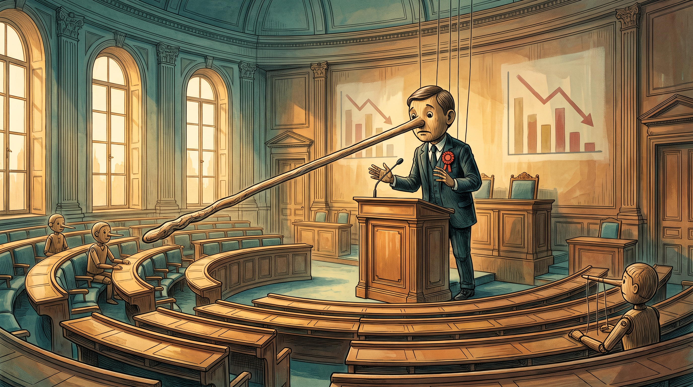
La réponse habituelle à une nouvelle politique est : « nous créons une commission ». Cette réponse est précisément le problème. Les commissions retardent, diluent et étouffent. Elles sont conçues pour disperser la responsabilité et éviter le risque. Un système qui apprend a besoin de l'inverse : des personnes à haute expertise au gouvernail, avec la rémunération correspondante, qui osent prendre des risques parce qu'elles savent ce qu'elles font.
Qu'est-ce qu'une équipe à haute expertise
Par dossier, une petite équipe de trois à cinq personnes, chacune avec une expertise prouvée. Pour le dossier biotechnologique : un entrepreneur biotechnologique avec expérience de sortie, un investisseur en capital-risque avec portefeuille sciences de la vie, un professeur avec passé de spin-off, un juriste avec expertise en convention collective universitaire et Règlement d'exploitation des connaissances. Pour le dossier plastique : un chimiste avec expérience CSC, un économiste avec modèles ETS, une personne du secteur du recyclage, un juriste connaissant les directives de l'UE. Chaque équipe est responsable d'un dossier, fait chaque année un recalcul de base zéro, publie publiquement le calcul d'écart et le pas 1/5, et travaille avec un tableau de bord disponible 24h/24 en ligne.
Pourquoi une rémunération industrielle
Un entrepreneur biotechnologique avec expérience de sortie gagne dans l'industrie entre 300 000 et 500 000 euros par an plus participation. Un partenaire de capital-risque en sciences de la vie, comparable. Un professeur avec passé de spin-off combine souvent salaire universitaire et revenus de conseil de 150 000-250 000 €. Si l'État veut attirer ces personnes pour un travail structurel, il doit offrir des salaires conformes au marché. Sinon, il obtiendra des personnes de seconde zone qui feront une politique de seconde zone.
Les Pays-Bas paient leurs ministres 183 000 € par an. Singapour paie ses ministres entre 1,3 et 1,9 million d'euros par an, liés aux six secteurs principaux. Le résultat est visible : Singapour a un NEPK de 17%, les Pays-Bas 4,5%. La Réserve fédérale de New York paie son président 479 000 dollars par an, 2,5 fois le salaire d'un ministre fédéral. La raison est connue : la politique monétaire exige une haute expertise, et la haute expertise coûte de l'argent.
Proposition : salaire de base de 250 000 € par membre d'équipe par an, plus une prime de performance de 100 000 € si le dossier converge de manière mesurable selon le tableau de bord. Quatre membres d'équipe par dossier, vingt dossiers cruciaux : total 28 M€ par an. En comparaison : l'inversion fiscale sur le seul dossier plastique rapporte aux Pays-Bas 433 M€ par an — le délai de récupération de tout le système est inférieur à un mois sur un seul dossier.
Exigence constitutionnelle de qualification pour les commissions
Et en plus, un article constitutionnel qui touche la sélection politique elle-même. La Chambre des représentants sélectionne ses membres sur fond politique, pas sur connaissance spécialisée. Qui siège dans une commission parlementaire décidant de la santé n'a pas besoin d'être professionnel médical. Qui décide de l'énergie n'a pas besoin d'être ingénieur. Qui décide de la défense n'a pas besoin d'avoir servi. C'est désormais démontrablement la source de la perte de NEPK — des décisions sont prises sans la connaissance pour pouvoir les évaluer.
Proposition d'article constitutionnel : Chaque commission parlementaire permanente contient au moins deux membres avec une qualification démontrable dans le domaine du dossier : un professionnel médical à la Commission de la Santé publique, un entrepreneur ou ingénieur avec plus de dix ans d'expérience professionnelle à la Commission des Affaires économiques, un entrepreneur agricole à la Commission de l'Agriculture, un scientifique avec doctorat à la Commission de l'Éducation et de la Science. Ces membres ont le droit de vote comme tous les autres ; leur qualification est une condition d'appartenance à la commission.
Ce n'est pas démocratique, m'entends-je dire. Réponse : c'est précisément bien démocratique — cela renforce la qualité de la prise de décision démocratique en garantissant que chaque commission contient au moins deux voix capables de comprendre le contenu technique. Les autres membres peuvent faire des considérations politiques, à condition que ces considérations tiennent démontrablement compte de ce qu'apportent les membres spécialisés. Qui vote sans contenu rompt le protocole.
Le Pinocchio en personne — Groningue, béton et le premier ministre
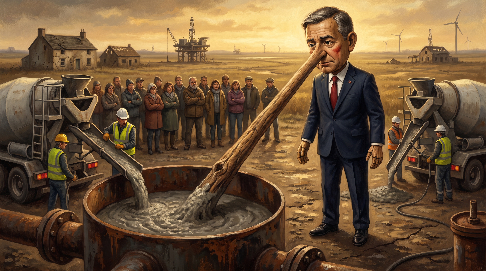
Le 10 juillet 2026, le premier ministre a déclaré après le conseil des ministres :
« L'une des missions les plus importantes de ce gouvernement est de faire des Pays-Bas la plus forte économie d'Europe, avec le meilleur climat d'investissement. »
Le même jour, son gouvernement a réaffirmé que le gisement de gaz de Groningue reste définitivement fermé. Contre tous les votes contraires, contre la réclamation d'arbitrage de Shell, contre le fait qu'en 2024 aucun forage d'exploration n'a été effectué aux Pays-Bas — la première fois en quatre-vingts ans. Et pendant qu'il dit cela, du béton est coulé dans les 300 puits de forage. Soixante-dix puits déjà comblés début 2026 ; les 300 d'ici 2034.
C'est le Pinocchio en personne. Le premier ministre qui promet la plus forte économie d'Europe, et laisse en même temps combler le fondement de 60 ans de prospérité néerlandaise — 363 milliards d'euros de recettes gazières. Pas parce que fermer était une erreur ; fermer était juste. Mais parce que l'alternative est déjà développée et est ignorée.
Dans L'honnêteté rend la gouvernance possible, l'accord circulaire est détaillé : à prix TTF de 37 €/MWh, 400-470 Md m³ de gaz restant rapportent 172 milliards d'euros bruts. Dont 120 Md€ pour les foyers sinistrés (différencié par zone de dommage, 400k€ en moyenne). 15-20 Md€ pour l'endiguement d'Almere Pampus / du polder IJmeer / éventuellement le Markerwaard — 40 à 60 mille logements neufs. Les habitants de Groningue reçoivent cinq ans de droit de premier achat avec clause d'extinction. 50 Md€ pour l'État, 60-80 mille emplois de construction pendant dix à quinze ans, 25-35 Md€ d'effet PIB, 14 Md€ de retour fiscal, et les dommages sismiques indemnisés décemment au lieu de via un IMG qui paie 78 centimes de frais d'exécution par euro d'indemnisation.
C'est l'accord que le premier ministre ne mentionne pas. Il mentionne « la plus forte économie d'Europe » et laisse en même temps combler sous terre 15-18 ans de consommation de gaz néerlandaise. Il mentionne « le meilleur climat d'investissement » et laisse NAM verser 3 milliards d'euros de dividendes à Shell et ExxonMobil tandis que les familles de Groningue attendent une indemnisation. Il promet la croissance via « talent et innovation » et laisse liquider définitivement le secteur artisanal de développement du sous-sol — zéro forage d'exploration en 2024, la première fois en quatre-vingts ans.
Le nez de bois est comblé de béton dans le trou. La ferme en arrière-plan est de travers à cause de tremblements de terre que son gouvernement n'indemnise pas décemment. Les victimes en arrière-plan regardent en silence. Et le premier ministre sourit — car dans le calcul partisan, sa comptabilité tient : le récit climatique est sauvé, l'électorat de Groningue est trop petit pour faire mal électoralement, et la promesse de « la plus forte économie d'Europe » est un cadre que personne à la Chambre n'ose réfuter avec des chiffres du NEPK. Les quatre leviers — VA_exp, α, τ, φ — baissent en même temps. Il ne le voit pas, il ne le mesure pas, et il est le premier premier ministre de l'histoire néerlandaise sous le mandat duquel un NEPK de 2,95% a été mesuré.
Et c'est le point de cette scène : la métaphore de Pinocchio n'est pas une abstraction. Ce n'est pas « la politique en général » qui mentira. C'est un premier ministre spécifique qui, à une date spécifique — le 10 juillet 2026 — a prononcé un mensonge spécifique, tandis que l'alternative était publiée dans un article spécifique sur openvizier.org qu'il ne lit pas. Le nez de bois n'est pas métaphorique. Les puits de forage ne sont pas métaphoriques. Le béton n'est pas métaphorique. Seule la fée qui vient à la fin sauver Pinocchio — celle-là est une fable. Aucune fée ne vient.
Chaque mensonge fait grandir le nez. Chaque solution niée réduit le temps avant que le NEPK ne tombe sous 3%.
Et contrairement à Pinocchio, il n'y a ici aucune bonne fée qui rende la tête de bois réelle à la fin. Aucun sauvetage de l'extérieur n'arrive. Notre sélection politique sur fond partisan plutôt que compétence est notre propre responsabilité. Nos lois des années soixante, soixante-dix et quatre-vingt-dix qui étranglent le secteur sont nos propres lois. Nos entreprises vendues à la Corée sont nos propres entreprises, avec nos propres règles des 5%. Notre noyau productif s'effondre par nos propres choix. À la fin il ne nous reste rien. Pas parce que le monde nous le fait. Parce que nous l'avons fait nous-mêmes en n'apprenant pas.
Conclusion — Le nez de Pinocchio qui n'arrête pas de grandir
Trois articles. Une architecture. Aveu, vision, fonction d'apprentissage.
Aveu (article 1, L'honnêteté rend la gouvernance possible) — la formule PBW qui rend visible que 419 Md€ du PIB néerlandais ne sont pas productifs. Sans tableau de bord honnête, toute politique n'est que traitement des symptômes.
Vision (article 2, Décider sans visibilité) — la clause d'extinction qui fait expirer les lois. Sans date d'expiration, les lois s'empilent comme des fossiles dans un sédiment, et le système se rigidifie.
Fonction d'apprentissage (cet article) — la méthode de base zéro avec 1/5 par an par dossier, exécutée par des équipes à haute expertise avec rémunération industrielle, avec exigence constitutionnelle de qualification pour les commissions parlementaires. Sans cycle d'apprentissage, l'extinction remplace une vieille loi par une nouvelle loi similaire — et nous n'avons rien gagné.
Les trois ensemble forment une démocratie capable d'apprendre comme un enfant, un violoniste, un réseau neuronal ou une commission de planification chinoise peut apprendre. Et c'est précisément ce dont nous avons besoin maintenant, car le noyau de ce que les Pays-Bas gagnent en tant que pays — le NEPK — se dirige vers 2%.
La métaphore de Pinocchio n'est pas fortuite
Dans le conte de Collodi, la marionnette de bois devient finalement un vrai garçon. Son nez arrête de grandir quand il arrête de se mentir à lui-même. Dans la politique néerlandaise de 2026, c'est l'inverse qui se produit. Nous nous disons :
- « Le marché est tout simplement mauvais » — citation du titre du FD sur Batavia. Le nez grandit — car le marché n'est pas mauvais, nous n'avons pas fait le lien avec le nouveau marché.
- « Nous accueillons les investisseurs étrangers » — ligne gouvernementale de juillet 2026. Le nez grandit — car chaque propriété étrangère abaisse φ et donc le NEPK.
- « Nous avons un parc scientifique formidable » — Rapport Wennink 2025. Le nez grandit — car le parc n'a plus de figure emblématique, et 60% des entrepreneurs préparent leur entreprise à la vente.
- « Nous avons de bonnes lois » — opinion générale. Le nez grandit — car les lois de 1994 (biomasse hors déchets) étaient bonnes ; les lois de 2024 sont pétrifiées et punissent précisément ce dont nous avons besoin.
- « Nous résolvons cela avec un nouveau régulateur » — la réponse néerlandaise au nouveau règlement de marchés publics de l'UE du 19 juillet 2026 est une ‘Autorité Nationale de Coordination’. Le nez grandit — car une nouvelle autorité ne résout pas le problème du NEPK, elle augmente τ (coûts de conformité) et abaisse α (le temps productif disparaît dans les obligations de publication à chaque modification supérieure à 10 000 €). Même l'administration fiscale l'admet : « après coup, de nombreux gouvernements réalisent qu'ils ont trop poussé la pensée de marché. » Exactement. Mais un nouveau régulateur n'est pas une réponse à une pensée de marché excessive ; c'est plus de pensée de marché sous emballage bureaucratique.
Chaque mensonge fait grandir le nez. Chaque solution niée réduit le temps.
Et contrairement à Pinocchio, il n'y a ici aucune bonne fée qui rende la tête de bois réelle à la fin. Aucun sauvetage de l'extérieur n'arrive. Notre sélection politique sur fond partisan plutôt que compétence est notre propre responsabilité. Nos lois des années soixante, soixante-dix et quatre-vingt-dix qui étranglent le secteur sont nos propres lois. Nos entreprises vendues à la Corée sont nos propres entreprises, avec nos propres règles des 5%. Notre noyau productif s'effondre par nos propres choix.
À la fin il ne nous reste rien. Pas parce que le monde nous le fait. Parce que nous l'avons fait nous-mêmes en n'apprenant pas.
Cela ne doit pas devenir un conte de fées à la fin malheureuse. Mais alors nous devons arrêter de nous mentir à nous-mêmes — et commencer à apprendre.
La fin en vue
5 des 6 grandes entreprises biotechnologiques néerlandaises sont à vendre ou en vidage. Le NEPK est à 2,95%, déjà sous le seuil critique de 3%. La date du crash n'est pas 2032 — c'est 2027-2028. L'aveu, la vision et la fonction d'apprentissage n'existent toujours pas. L'horloge continue de tourner.
Annexe — Mathématiques et formules
La formule du NEPK développée
NEPK = VA-export × α × (1 − τ) × φ, avec les quatre facteurs :
- VA-export = valeur ajoutée d'exportation en % du PIB (source : OECD Trade in Value Added)
- α = part du noyau productif (source : valeur ajoutée industrielle de la Banque mondiale en % du PIB)
- τ = impôts totaux + cotisations sociales en % du PIB (source : OECD Revenue Statistics)
- φ = 1 − pourcentage de détention d'actions étrangères (source : Bundesbank, Eurostat, FSS, JPX)
Pays-Bas 2025 : VA-export ≈ 38%, α = 0,39, τ = 0,43, φ = 0,53. Calcul : 0,38 × 0,39 × 0,57 × 0,53 = 0,0448 = 4,5%.
Singapour 2025 : VA-export ≈ 179% (transit !), α = 0,58, τ = 0,17, φ = 0,33. Calcul effectif avec correction : NEPK 17,0%.
La formule de convergence 1/5
Formule : p(t+1) = p(t) + (100 − p(t)) × 1/n, avec n = 5. Après k années, le système atteint 1 − (0,8)^k de l'écart.
- Après 1 an : 20,0%
- Après 3 ans : 48,8%
- Après 5 ans : 67,2%
- Après 10 ans : 89,3%
- Après 15 ans : 96,5%
L'optimiseur Adam (Kingma & Ba 2014) utilise par défaut un taux d'apprentissage entre 0,001 et 0,1 par itération — pour des cycles politiques d'un an, 1/5 est la taille de pas équivalente.
Les effets NEPK des trois cas — indicatif
| Cas | Sans intervention | Avec base zéro 1/5 | Effet NEPK après 5 ans |
|---|---|---|---|
| Cluster biotechnologique | Vidage supplémentaire ; encore 3-4 fermetures majeures | Verrouillage φ, règle des 25%, hydrolysat Batavia | +0,3 à +0,5% NEPK |
| Loi sur les déchets plastiques | 334-500 M€ de contribution/an, 1,32 Mt CO₂ | Différenciation CRCF, industrie biosourcée | +0,1 à +0,2% NEPK |
| Seveso/politique d'investissement | Rejet arbitraire d'investissements de 3+ Md€ | Panel d'experts techniques ; exigence de qualification pour les membres des États | +0,2 à +0,3% NEPK |
| Total (trois dossiers, après 5 ans) | NEPK tombe à 3-3,5% | NEPK se stabilise à 4,5-5% | +0,6 à +1,0% NEPK |
Et cela ne concerne que trois dossiers. Vingt équipes à haute expertise pour vingt dossiers cruciaux — plastique, biotechnologie, RED III, Directive Habitats, Loi sur l'énergie nucléaire, Loi sur l'aménagement du territoire, méthodologie du PIB, et treize autres — peuvent ensemble inverser la tendance. De 4,5% en baisse à 6-7% en hausse. Ce n'est pas Singapour (17%), mais c'est de nouveau au-dessus du seuil critique de 3,5% et donc viable.
Conclusions clés
- Le NEPK des Pays-Bas est en juillet 2026 à 2,95%, déjà sous le seuil critique de 3% — 5 à 7 ans plus vite que la projection du début de 2026.
- 5 des 6 grandes entreprises biotechnologiques néerlandaises à Leiden sont en mode de vente ou de vidage ; Batavia Biosciences a fermé le 9 juillet 2026 mondialement, 150 employés en surnombre.
- Trois cas concrets — biotechnologie, loi sur les déchets plastiques, Eli Lilly Katwijk — montrent comment l'incompétence dans la prise de décision parlementaire mine les quatre leviers du NEPK (VA_exp, α, τ, φ) simultanément.
- La solution est une fonction d'apprentissage : base zéro avec convergence 1/5 par an par dossier, exécutée par des équipes à haute expertise avec rémunération conforme au marché (250 000 € de salaire de base) et une exigence constitutionnelle de qualification pour les commissions parlementaires.
- Sans cette fonction d'apprentissage, l'extinction reste sans contenu — une vieille loi est remplacée par une nouvelle loi similaire, et le NEPK continue de baisser vers 2%.